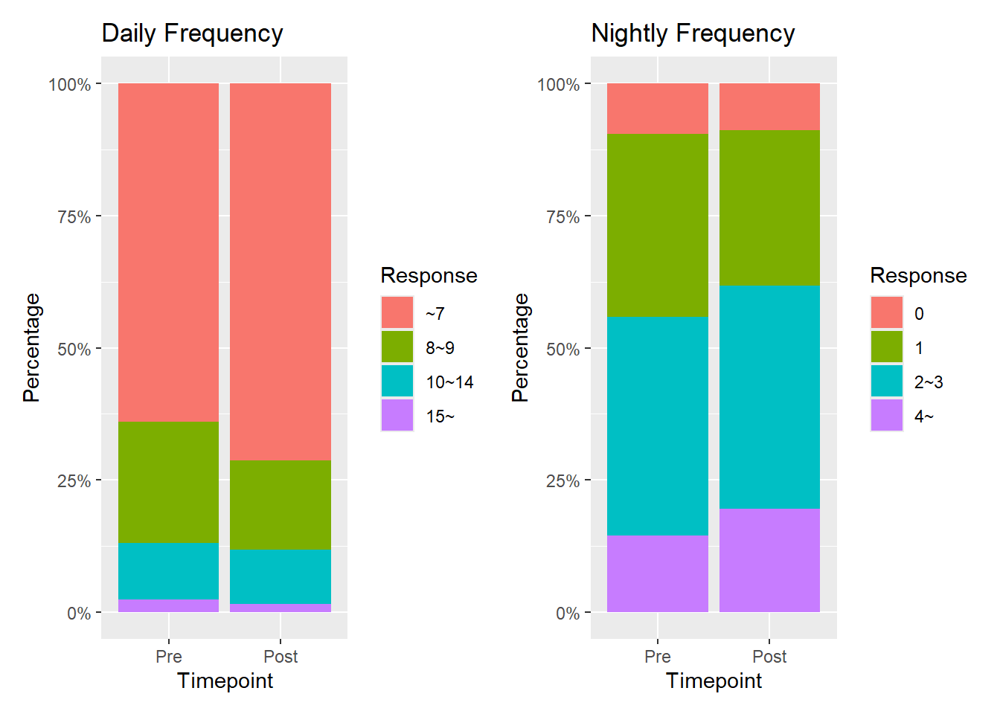

Pre-emptive or reactive in-dwelling catheterisation does not impact patient-reported urinary symptoms following lower limb arthroplasty: A prospective cohort study in a metropolitan public hospital.
0.1 Preamble
Author Affiliation: EBM Analytics
Client | Sponsor: Lorenzo Calabro, QEII Orthopaedics Department, Metro South
EBMAReference: Pub_Catheterisation_CB030Jun20
Version: 1.0
This analysis is a companion piece to the manuscript of the project. The analysis report has been organised as per the STROBE guidelines and checklist (Vandenbroucke et al. 2007). The contents of the sections has been derived from the manuscript (partly completed at the time of drafting), the protocol approved by the local health district HREC 13-Jun-2023, as well as an earlier study viability report generated by EBMA, and the results of the analysis, where appropriate.The analysis was generated using R (2023) R.Version()$version.string in RStudio (v2024.12.1+563) and Quarto (v1.4.549) with appropriate specialised packages as required. Code and text were combined within the report using the epoxy package (v1.0.0)) (Aden-Buie 2023).
0.2 Reporting
The study was reported according to the STROBE guidelines (Vandenbroucke et al. 2007) and companion checklist.
The analysis was conducted in RStudio IDE (RStudio 2024.12.0+467 “Kousa Dogwood” Release) using Rbase (2023), quarto (Allaire and Dervieux 2024) and attached packages to perform the following;
Data import and preparation
Sample selection
Describe and address missingness
Data manipulation, modelling and visualisation of;
Patient characteristics
Treatment characteristics
Adverse events and complications
Patient reported outcomes
Publish to posit connect for dissemination
0.3 STROBE [1] Title:
The title has been expressed in a declarative statement regarding the main findings.
Draft title: Pre-emptive or reactive in-dwelling catheterisation does not impact patient-reported urinary symptoms following lower limb arthroplasty: A prospective cohort study in a metropolitan public hospital.
0.4 STROBE [1] Abstract:
1 Analysis Introduction:
The rationale for the study and justification can be found in the viability reports conducted prior to initiation.
Question check -
Viability report -
Study plan -
1.1 Analysis Preparation
Load up required packages in advance; check if packages are installed, if not, install them. Citations applied to each library at first use in the text.
1.3 Functions
Include a series of functions to call later in the file for processing data imports.
1.4 STROBE [2] Background
The introduction is not yet fully drafted.
1.5 STROBE [3] Objectives
We sought to characterise the rate of patient reported urinary complications, and patient satisfaction with urinary management following elective hip and knee arthroplasty. Our secondary aim was to identify the patient and surgical factors predicting the incidence and severity of urinary complications following lower limb arthroplasty.
The study objectives have evolved over time. The original study question as per the study plan was the following;
| Component | Study-Specific |
|---|---|
| Population | In patients electing to undergo hip or knee total arthroplasty with one of four participating surgeons in a metropolitan public hospital |
| Intervention | How do those that report a change in urinary symptoms between pre-admission clinic and 21 days after surgery differ to |
| Comparator | Those that do not report a change in symptoms |
| Outcomes | Primary: In patient characteristics, baseline symptoms and management factors Secondary: In satisfaction with urinary management/incidence of POUR at 2-week follow-up |
| Study Design | Within an observational cohort design embedded into the SHARKS registry (QEII Orthopaedic Department) |
| Component | Study-Specific |
|---|---|
| Population | In patients electing to undergo hip or knee total arthroplasty with one of four participating surgeons in a metropolitan public hospital |
| Intervention | Receiving pre-emptive urinary catheterisation |
| Comparator | Compared to those that do not |
| Outcomes | How do i) urinary symptoms as measured by the core lower urinary tract symptom score (CLSS) and ii) satisfaction with urinary management in-hospital at two weeks followup differ? |
| Study Design | Within an observational cohort design embedded into the SHARKS registry (QEII Orthopaedic Department) |
1.5.1 Hypotheses
| Question | Clinical | Statistical |
|---|---|---|
| 1 |
|
H1: The predicted probability of a change in urinary symptoms by a multivariable model will be closer to actual probabilities than expected by chance H0: The predicted probability of a change in urinary symptoms by a multivariable model will not be closer to actual probabilities than expected by chance |
| 1 | Patients with symptoms will tend to be less satisfied with the management received for managing POUR | |
| 2 | Patients receiving reactive catheterisation on the recovery ward in response to image-detected urinary retention will report worse CLSS and satisfaction at two week follow up | H1: The predicted probability of a postoperative urinary symptoms by a multivariable model will be closer to actual probabilities than expected by chance H0: The predicted probability of a change in urinary symptoms by a multivariable model will not be closer to actual probabilities than expected by chance |
2 Methods:
2.1 STROBE [4] Study Design:
Observational cohort study embedded into a department clinical quality registry for lower limb arthroplasty (SHARKS).
2.2 STROBE [5] Setting:
The study setting is an orthopaedic department within a medium-sized metropolitan public hospital in a capital city of Australia. The analysis and data collection were sampled from all eligible arthroplasty cases from the commencement date of the study to the time of initial analysis. It is asserted that the setting is representative of orthopaedic care in Australia and possesses sufficient equivalence for consideration internationally.
2.3 STROBE [6] Participants:
Critique the definition of the study population, including inclusion and exclusion criteria.
2.4 STROBE [7] Variables:
A core dataset for the study was derived a-priori.
2.4.1 Outcome(s)
The study outcomes were centred on the core lower urinary tract symptom score (CLSS).
2.5 STROBE [8] Data Sources/Measurement:
2.5.1 Data Import and Preparation
Retrieve and format data from live tables and registry snapshot. Using openxlsx (openxlsx2 1.13 2025-02-15 16:20:02 UTC C:/Users/cscho/AppData/Local/R/win-library/4.4) (Barbone and Garbuszus 2024) to retrieve static snapshot files and googlesheets4 (googlesheets4 1.1.1 2023-06-11 04:00:02 UTC C:/Users/cscho/AppData/Local/R/win-library/4.4) (Bryan 2023) to retrieve live database tables.
Prepare analysis dataset
Convert PROMS to long dataset
Establish model input dataset
2.6 STROBE [9] Bias:
2.7 Missing Data
2.8 STROBE [10] Study size:
2.9 STROBE [11] Quantitative variables:
2.10 STROBE [12] Statistical Methods:
3 Results:
3.1 STROBE [13] Participant Flow:
3.2 STROBE [14] Descriptive Data:
| Characteristic | N = 2861 |
|---|---|
| Age at surgery | 69.4 (9.3) |
| BMI | 31.8 (6.2) |
| Sex | |
| Female | 51.7% (148) |
| Male | 48.3% (138) |
| Bilateral | 5.9% (17) |
| Joint | |
| Hip | 36.0% (103) |
| Knee | 64.0% (183) |
| Surgeon | |
| A | 23.0% (58) |
| B | 44.8% (113) |
| C | 3.6% (9) |
| D | 2.0% (5) |
| E | 26.2% (66) |
| F | 0.4% (1) |
| Unknown | 34 |
| Comorbidities - diabetes | 21.0% (60) |
| Comorbidities - cardiovascular | 27.3% (78) |
| Comorbidities - neurological | 5.9% (17) |
| Comorbidities - previous urologic surgery | 12.2% (35) |
| UrineMCS | |
| Bacteriuria | 19.6% (56) |
| No Bacteriuria | 73.4% (210) |
| Not Tested | 7.0% (20) |
| 1 Mean (SD); % (n) | |
| Characteristic | Overall N = 2861 |
95% CI2 | No N = 1741 |
95% CI2 | Yes N = 1121 |
95% CI2 | p-value3 | q-value4 |
|---|---|---|---|---|---|---|---|---|
| Age at surgery | 69.4 (9.3) | 68 - 70 | 69.5 (9.0) | 68 - 71 | 69.3 (9.9) | 67 - 71 | 0.7 | >0.9 |
| BMI | 31.8 (6.2) | 31 - 33 | 31.3 (6.0) | 30 - 32 | 32.6 (6.4) | 31 - 34 | 0.056 | 0.13 |
| Sex | 51.7% (148) | 46 - 58 | 47.1% (82) | 40 - 55 | 58.9% (66) | 49 - 68 | 0.051 | 0.13 |
| Bilateral | 5.9% (17) | 3.6 - 9.5 | 0.0% (0) | 0.00 - 2.7 | 15.2% (17) | 9.3 - 23 | <0.001 | <0.001 |
| Joint | >0.9 | >0.9 | ||||||
| Hip | 36.0% (103) | 31 - 42 | 36.2% (63) | 29 - 44 | 35.7% (40) | 27 - 45 | ||
| Knee | 64.0% (183) | 58 - 69 | 63.8% (111) | 56 - 71 | 64.3% (72) | 55 - 73 | ||
| Surgeon | <0.001 | <0.001 | ||||||
| A | 23.0% (58) | 18 - 29 | 32.4% (46) | 25 - 41 | 10.9% (12) | 6.0 - 19 | ||
| B | 44.8% (113) | 39 - 51 | 21.1% (30) | 15 - 29 | 75.5% (83) | 66 - 83 | ||
| C | 3.6% (9) | 1.8 - 6.9 | 3.5% (5) | 1.3 - 8.4 | 3.6% (4) | 1.2 - 9.6 | ||
| D | 2.0% (5) | 0.73 - 4.8 | 2.8% (4) | 0.91 - 7.5 | 0.9% (1) | 0.05 - 5.7 | ||
| E | 26.2% (66) | 21 - 32 | 39.4% (56) | 31 - 48 | 9.1% (10) | 4.7 - 16 | ||
| F | 0.4% (1) | 0.02 - 2.5 | 0.7% (1) | 0.04 - 4.4 | 0.0% (0) | 0.00 - 4.2 | ||
| Unknown | 34 | 32 | 2 | |||||
| Comorbidities - diabetes | 21.0% (60) | 17 - 26 | 18.4% (32) | 13 - 25 | 25.0% (28) | 18 - 34 | 0.2 | 0.4 |
| Comorbidities - cardiovascular | 27.3% (78) | 22 - 33 | 29.3% (51) | 23 - 37 | 24.1% (27) | 17 - 33 | 0.3 | 0.5 |
| Comorbidities - neurological | 5.9% (17) | 3.6 - 9.5 | 5.7% (10) | 2.9 - 11 | 6.3% (7) | 2.8 - 13 | 0.9 | >0.9 |
| Comorbidities - previous urologic surgery | 12.2% (35) | 8.8 - 17 | 12.6% (22) | 8.3 - 19 | 11.6% (13) | 6.6 - 19 | 0.8 | >0.9 |
| UrineMCS | 19.6% (56) | 15 - 25 | 19.5% (34) | 14 - 26 | 19.6% (22) | 13 - 28 | >0.9 | >0.9 |
| Fentanyl - Bupivicaine | 70.3% (201) | 65 - 75 | 73.0% (127) | 66 - 79 | 66.1% (74) | 56 - 75 | 0.2 | 0.4 |
| Intraop fluid (mL) | 1,213.9 (709.7) | 1,131 - 1,297 | 1,099.5 (608.5) | 1,008 - 1,191 | 1,391.1 (814.6) | 1,238 - 1,544 | 0.005 | 0.017 |
| Unknown | 3 | 2 | 1 | |||||
| Spinal anaesthesia | 79.4% (227) | 74 - 84 | 78.7% (137) | 72 - 84 | 80.4% (90) | 72 - 87 | 0.7 | >0.9 |
| SurgicalDuration | 131.1 (39.9) | 127 - 136 | 120.3 (27.2) | 116 - 124 | 148.0 (49.6) | 139 - 157 | <0.001 | <0.001 |
| Reactive IDC insertion | 10.5% (30) | 7.3 - 15 | 17.2% (30) | 12 - 24 | 0.0% (0) | 0.00 - 4.1 | <0.001 | <0.001 |
| 1 Mean (SD); % (n) | ||||||||
| 2 CI = Confidence Interval | ||||||||
| 3 Wilcoxon rank sum test; Pearson’s Chi-squared test; Fisher’s exact test | ||||||||
| 4 False discovery rate correction for multiple testing | ||||||||
3.3 STROBE [15] Outcome Data:
Figure 2: Summary of CLSS total score before and after lower limb arthroplasty

Do the responses remain stable at the individual level





3.4 STROBE [16] Main Results:
Critically analyze the presentation and interpretation of primary findings, including effect estimates and confidence intervals.
2.5 % 97.5 %
.sig01 2.7128210 4.1091645
.sig02 0.0000000 2.9173500
.sigma 1.9517061 3.2890349
(Intercept) -0.9172971 11.2639835
Timepoint1 -0.7560765 0.9099227
SexMale -3.8263113 -0.4758845
AgeAtSurgery -0.0444211 0.1272181Linear mixed model fit by REML ['lmerMod']
Formula: Total ~ Timepoint1 + Sex + AgeAtSurgery + ((1 | CombID) + (0 +
Timepoint1 | CombID))
Data: dplyr::filter(CLSSTotal3, PreIDC == 1)
REML criterion at convergence: 1020.3
Scaled residuals:
Min 1Q Median 3Q Max
-2.4477 -0.4894 -0.1635 0.4219 2.5898
Random effects:
Groups Name Variance Std.Dev.
CombID (Intercept) 11.793 3.434
CombID.1 Timepoint1 1.573 1.254
Residual 7.349 2.711
Number of obs: 182, groups: CombID, 91
Fixed effects:
Estimate Std. Error t value
(Intercept) 5.17341 3.12680 1.655
Timepoint1 0.07692 0.42286 0.182
SexMale -2.15110 0.85721 -2.509
AgeAtSurgery 0.04140 0.04406 0.940
Correlation of Fixed Effects:
(Intr) Tmpnt1 SexMal
Timepoint1 -0.061
SexMale -0.121 0.000
AgeAtSurgry -0.984 0.000 0.016| Characteristic | exp(Beta) | 95% CI1 | p-value |
|---|---|---|---|
| Timepoint1 | 1.08 | 0.47, 2.47 | 0.86 |
| Sex | 0.12 | 0.02, 0.62 | 0.012 |
| AgeAtSurgery | 1.04 | 0.96, 1.14 | 0.35 |
| CombID.sd__(Intercept) | 3.43 | ||
| CombID.1.sd__Timepoint1 | 1.25 | ||
| Residual.sd__Observation | 2.71 | ||
| 1 CI = Confidence Interval | |||
3.5 STROBE [17] Other Analyses:
Critically analyze the presentation and interpretation of subgroups, interactions or the description and evaluation of sensitivity analyses.
4 Discussion:
4.1 STROBE [18] Key Results:
Critically interpret the findings in the context of the study objectives.
4.2 STROBE [19] Limitations:
Provide a thorough critique of the limitations of the study design, methods, and data.
4.3 STROBE [20] Interpretation:
Assess whether the interpretation is adequately cautious and whether the comparisons to related literature are appropriate. Assess the implications of the findings for clinical practice and the need for further research, considering alternative interpretations.
4.4 STROBE [21] Generalizability:
Evaluate the strength of evidence supporting the external validity of the findings.
4.5 Comparison with Existing Literature:
Critically compare findings with previous research, assessing consistency and discrepancies.
5 Ethical Considerations:
5.1 Informed Consent:
Critically analyze the adequacy of procedures for obtaining informed consent from participants.
5.2 Ethical Approval:
Evaluate whether the study received appropriate approval from an ethics committee or institutional review board.
5.3 Privacy and Confidentiality:
Assess the adequacy of measures taken to protect participants’ privacy and confidentiality. Beneficence and Non-maleficence: Critically evaluate any potential risks or benefits to participants and how they were addressed.
6 Conflicts of Interest:
6.1 STROBE [22] Funding:
Assess the degree of transparency to which the source of funding and role of the funders have played in the study/article.
6.2 Disclosure:
Evaluate the transparency and completeness of disclosures regarding conflicts of interest among the study authors or sponsors.
6.3 Potential for Biases:
Critically assess whether conflicts of interest could have influenced the study design, analysis, or interpretation of results.
7 References
Aden-Buie, Garrick. 2023. “Epoxy: String Interpolation for Documents, Reports and Apps.” https://CRAN.R-project.org/package=epoxy.
Allaire, JJ, and Christophe Dervieux. 2024. “Quarto: R Interface to ’Quarto’ Markdown Publishing System.” https://CRAN.R-project.org/package=quarto.
Barbone, Jordan Mark, and Jan Marvin Garbuszus. 2024. “Openxlsx2: Read, Write and Edit ’Xlsx’ Files.” https://janmarvin.github.io/openxlsx2/.
Bryan, Jennifer. 2023. “Googlesheets4: Access Google Sheets Using the Sheets API V4.” https://CRAN.R-project.org/package=googlesheets4.
Bryan, Jennifer, Craig Citro, and Hadley Wickham. 2023. “Gargle: Utilities for Working with Google APIs.” https://CRAN.R-project.org/package=gargle.
R Core Team. 2023. “R: A Language and Environment for Statistical Computing.” https://www.R-project.org/.
Vandenbroucke, Jan P, Erik von Elm, Douglas G Altman, Peter C Gøtzsche, Cynthia D Mulrow, Stuart J Pocock, Charles Poole, James J Schlesselman, and Matthias Egger. 2007. “Strengthening the Reporting of Observational Studies in Epidemiology (STROBE): Explanation and Elaboration.” PLoS Medicine 4 (10): e297. https://doi.org/10.1371/journal.pmed.0040297.